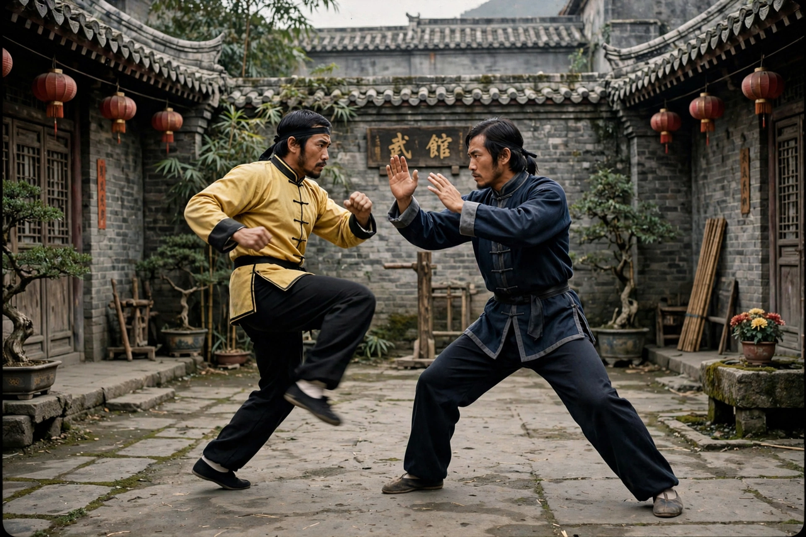

Martial arts film
| Martial arts film | |
|---|---|
 | |
| Major figures | Bruce Lee, Jackie Chan, Jet Li, Donnie Yen, Kwan Tak-hing, Michelle Yeoh |
| Key studios | Shaw Brothers, Golden Harvest, Film Workshop |
| Subgenres | Wuxia, kung fu film, heroic bloodshed, wire fu, martial arts comedy |
| Origin | China and Hong Kong, 1920s–present |
Martial arts films are a subgenre of action film in which fight scenes involving martial arts are the primary entertainment and the chief means of expressing character and plot. The genre is most strongly associated with Hong Kong and Chinese cinema (see cinema of China), though it has also flourished in Japan, Thailand, Indonesia and Hollywood.
Wuxia and kung fu
The wuxia tradition, drawn from classical Chinese novels about wandering swordsmen (xia), entered film in the 1920s and flourished at Shaw Brothers in the 1960s with directors such as King Hu (Come Drink with Me, 1966; A Touch of Zen, 1971) and Chang Cheh. In the 1970s the emphasis shifted to grounded kung fu films set in the recent past: Bruce Lee's The Big Boss (1971), Fist of Fury (1972) and Enter the Dragon (1973) made the genre a global phenomenon and Lee its definitive star.
Comedy, wirework and heroic bloodshed
Jackie Chan's Drunken Master (1978) fused kung fu with slapstick comedy. In the 1980s and 1990s, producers such as Tsui Hark reinvented wuxia with elaborate wire-assisted "wire fu" choreography and computer effects, while John Woo's gunplay-centred "heroic bloodshed" films with Chow Yun-fat extended the genre's code of honourable brotherhood into the modern crime film. Stephen Chow's Kung Fu Hustle (2004) parodied and celebrated the whole tradition.
Global influence
Martial arts choreography reshaped action cinema worldwide, from The Matrix (1999), choreographed by Yuen Woo-ping, to Ang Lee's Crouching Tiger, Hidden Dragon (2000), a worldwide hit, and the John Wick series. Stars such as Jet Li, Donnie Yen (Ip Man, 2008) and Michelle Yeoh carried the genre into the twenty-first century, while Thai (Ong-Bak, 2003) and Indonesian (The Raid, 2011) films brought new regional styles to international attention.